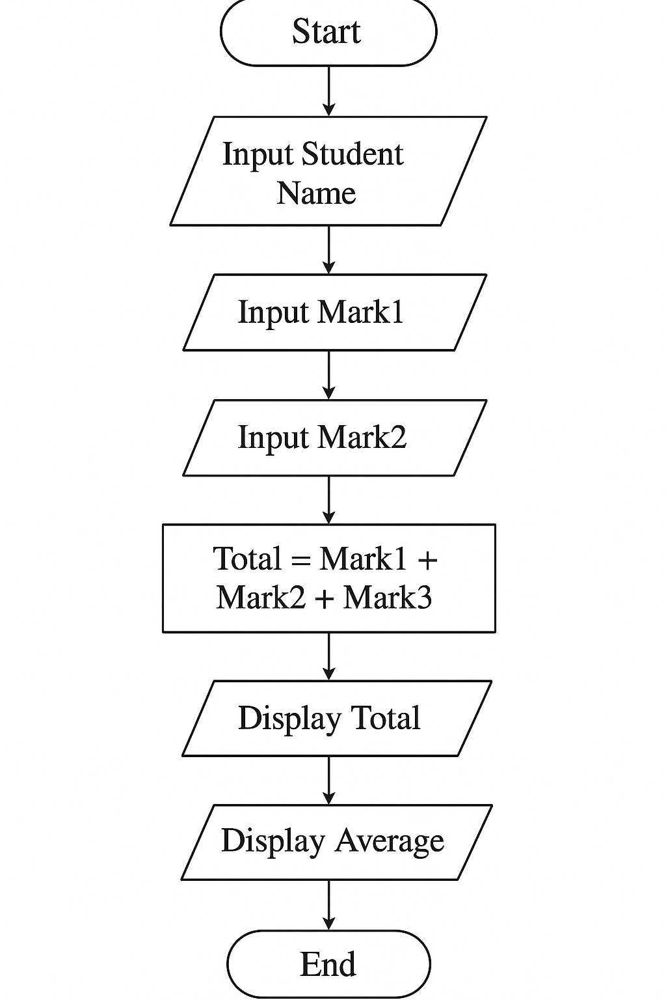

SCHOOL COMPREHENSIVE ASSESSMENT - MARKING GUIDE
SECTOR: ICT & MULTIMEDIA
RTQF LEVEL: 3
TRADE: NETWORKING AND INTERNET
TECHNOLOGY
DURATION: 3 HOURS
A. Fill in the Blanks (10 Marks)
- A set of instructions written to perform a task is called computer program.
- A system of rules used to write instructions is called a programming language.
- The comment symbol in C is //.
- A flowchart uses standardized symbols.
- C was developed by Dennis Ritchie.
- A constant is declared using const.
- Assignment operator is =.
- Programs must follow correct syntax.
- A flowchart represents an graphical.
- Example of high-level language: Python.
B. Multiple Choice Questions (10 Marks)
- d) Assembly
- c) bool
- a) &&
- b) Dev-C++
- c) int number;
- d) Decision-making
- a) Input/Output
- c) Ordered steps
- b) ==
- d) main()
C. True/False (10 Marks)
- False
- True
- True
- False
- True
- True
- False
- False
- True
- False
D. Matching (8 Marks)
| Column A | Column B | Answer |
|---|---|---|
| Flowchart | Shows program steps | 1 — E |
| Algorithm | Step-by-step procedure | 2 — G |
| Constant | Fixed value | 3 — B |
| Compiler | Converts to machine code | 4 — F |
| If statement | Decision-making | 5 — D |
| Variable | Changeable data | 6 — H |
| IDE | Coding environment | 7 — A |
| Data type | Defines type | 8 — C |
E. Ordering (4 Marks)
- Install compiler
- Write code
- Save as .c
- Compile
- Run & Debug
F. Short-Answer Questions (13 Marks)
-
List any four types of programming languages. (4
marks)
- Machine language – directly understood by the computer.
- Assembly language – uses mnemonic codes for instructions.
- High-level language – easier for humans to read/write (e.g., C, Python).
- Object-oriented language – organizes code using objects and classes (e.g., Java, C++).
-
Give five purposes of programming languages. (5
marks)
- To communicate instructions to a computer.
- To automate tasks and reduce manual effort.
- To solve problems by implementing algorithms.
- To create applications and software for users.
- To control hardware and interact with devices.
-
Identify two flowchart symbols and state their
uses. (2 marks)
- Oval (Terminator): Represents the start or end of a process.
- Rectangle (Process): Represents a processing step or instruction.
-
Define a token in C and give four examples. (2
marks)
Definition: A token is the smallest element in a C program that has meaning.
int(keyword)x(identifier)+(operator)123(constant)
SECTION B: ANSWER ANY THREE (30 Marks)
1. Explain the different data types in C and give examples.
1. int (Integer): Used for whole numbers.
- Example:
int age = 20;
2. float (Floating-point): Stores decimal values.
- Example:
float price = 12.5;
3. char (Character): Stores one character.
- Example:
char grade = 'A';
4. double: Stores double-precision decimals.
- Example:
double salary = 12500.75;
5. void: Represents no value.
- Example:
void display();
2. Describe the steps of developing a flowchart and its importance.
A. Steps:
- Define the problem
- Identify inputs & outputs
- Determine solution steps
- Draw with standard symbols
- Check logical flow
B. Importance:
- Clarifies algorithm
- Enhances understanding
- Reduces errors
- Useful documentation
- Improves planning
3. Discuss the structure of a C program and give an example.
1. Preprocessor Directives — include libraries.
2. Functions — contain executable code.
3. Variables — store data.
4. Statements — instructions.
5. Comments — documentation.
#include <stdio.h>
int main() {
int x = 10; // variable
printf("Value: %d", x);
return 0;
}
4. Explain the main types of operators in C with examples.
1. Arithmetic Operators: + - * / %
- Example:
a + b
2. Logical Operators: && || !
- Example:
(a > 5 && b < 10)
3. Relational Operators: > < >= <= == !=
- Example:
a == b
4. Assignment Operators: = += -=
- Example:
x += 5;
5. Increment/Decrement: ++ --
x++;or--y;
SECTION C (Compulsory)
A. Local File Image

B. Question 2: Algorithm
Here’s a step-by-step algorithm:
Start
Input the student’s name.
Input the marks of three subjects (Mark1, Mark2, Mark3).
Calculate the total: Total = Mark1 + Mark2 + Mark3.
Calculate the average: Average = Total / 3.
Display the student’s name, total, and average.
End
C. Question 3: C Program
Here’s the C program implementing the above algorithm:
#include <stdio.h>
int main() {
char name[50];
float mark1, mark2, mark3, total, average;
// Input student name
printf("Enter student name: ");
scanf("%[^\n]", name); // Reads full name with spaces
// Input marks
printf("Enter mark for subject 1: ");
scanf("%f", &mark1);
printf("Enter mark for subject 2: ");
scanf("%f", &mark2);
printf("Enter mark for subject 3: ");
scanf("%f", &mark3);
// Calculate total and average
total = mark1 + mark2 + mark3;
average = total / 3;
// Display results
printf("\nStudent Name: %s\n", name);
printf("Total Marks: %.2f\n", total);
printf("Average Marks: %.2f\n", average);
return 0;
}
Explanation:
scanf("%[^\n]", name);reads the full name including spaces.- Marks are
floatto allow decimal points. - Total and average are calculated and displayed.